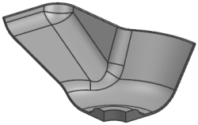
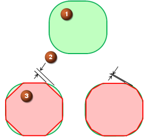
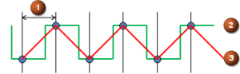
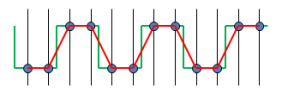
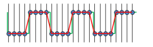

Open mnf16_85_cap3_setup_1.

Save the part as xxx_cap3_setup_1.
Replace xxx with your initials.
On the operating system, navigate to the folder where you saved the part, and review the size of the xxx_cap3_setup_1.prt file.
Notice that the file size is approximately 500 KB. You will check the file size again after creating facet bodies.
Choose File→Utilities→Customer Defaults.
In the Customer Defaults dialog box, select Manufacturing→Simulation & Visualization.
Click the IPW tab.
In the IPW Tolerances group, review the Chordal Tolerance value.
The default setting is 0.05 mm. You can decrease the value to create more accurate geometry, or increase the value to create the facet geometry faster.

1: Original geometry shape
2: Chordal tolerance
3: Approximated shape for facets
Notice the Tolerance Mode setting.
This setting determines whether NX uses the Needle Distance or Needle Count values specified to create the IPW.
In the Needle Distance group, review the values for the Coarse, Medium, and Fine needle distances.



1: Needle distance
2: Original geometry shape
3: Approximated shape for facets
As the needle distance decreases, the facet geometry approximation becomes more accurate, and the time required to create the facet geometry increases.
The computation time required to create the facet geometry also increases with part size. A larger part requires more needles, and more calculations.
Review the Maximum Needle Count value.
This option restricts the grid size and memory requirements for IPW calculations. Restricting the grid size prevents memory problems that can result from a small needle distance applied to large part geometry.
From the Tolerance Mode list, select Needle Count.
In the Needle Count group, review the values for the Coarse, Medium, and Fine needle distances.
The computation time required to create the facet geometry does not increase with part size. The number of needles is the same for a large part as it is for a small part.
Click Cancel to close the Customer Defaults dialog box without saving any changes.